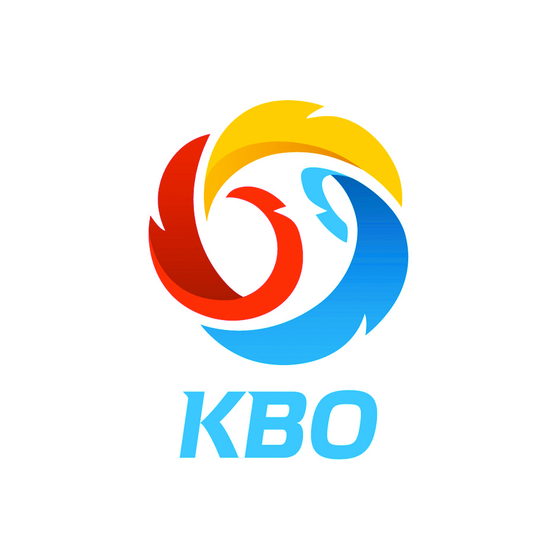

KBO 리그/역사 (History of KBO League)
대한민국의 프로야구 리그인 KBO 리그(KBO League)는 1982년 출범한 이래 대한민국에서 가장 높은 인기와 확고한 팬덤을 자랑하는 최상위 프로 스포츠 리그입니다. 지난 수십 년 동안 수많은 명승부와 스타 선수들을 배출하며 국민들과 희로애락을 함께해 온 KBO 리그의 시대별 발자취를 정리합니다.
1. 1980년대: 프로야구의 서막과 정착 (1982~1989)
1.1. 1982년 프로야구의 출범
1981년 창립 총회를 거쳐 1982년 3월 27일, 동대문야구장에서 MBC 청룡과 삼성 라이온즈의 개막전을 시작으로 프로야구가 공식 출범했습니다. KBO 리그의 탄생은 당시 5공화국 정부의 3S 정책(Sports, Screen, Sex)의 일환이라는 정치적 배경도 존재했으나, 고교야구에 열광하던 야구팬들을 흡수하며 빠르게 국민 스포츠로 자리 잡았습니다. 창설 당시 참가한 구단은 MBC 청룡, 롯데 자이언츠, 삼성 라이온즈, 삼미 슈퍼스타즈, OB 베어스, 해태 타이거즈의 원년 6개 구단이었습니다.
1.2. 지역 연고제와 타이거즈 왕조의 시작
출범 초기 KBO 리그는 철저한 대도시·도(道) 단위의 지역 연고제를 채택하여 고향 팀을 응원하는 뜨거운 열기를 만들어냈습니다. 1980년대는 김응용 감독의 지휘 아래 선동열, 김성한 등이 활약한 해태 타이거즈가 KBO 리그를 지배했던 시기입니다. 해태는 1983년 첫 우승을 시작으로 1986년부터 1989년까지 전무후무한 한국시리즈 4연패를 달성하며 독주 체제를 굳혔습니다. 한편, 최동원과 장명부 등 투수들의 혹독한 완투·연투 릴레이가 이어지며 수많은 전설적인 대기록이 작성되기도 했습니다.
2. 1990년대: 황금기와 격동의 구조조정 (1990~1999)
2.1. 100만 관중과 자율 야구의 바람
1990년대 전반기는 KBO 리그의 첫 번째 황금기였습니다. 1990년 MBC 청룡을 인수한 LG 트윈스가 '신바람 야구'를 앞세워 서울을 강타했고, 1992년 롯데 자이언츠가 염종석의 활약으로 우승하며 부산 야구 열풍을 이끌었습니다. 특히 1994년에는 KBO 역사상 최초로 총 관중 500만 명을 돌파했으며, 서용빈·유지현·김재현 등 신인 스타들의 등장으로 야구장이 젊은 팬들과 여성 팬들로 가득 차는 문화적 대전환을 맞이했습니다.
2.2. IMF 외환위기와 구단 대격변
1997년 말에 몰아친 IMF 외환위기는 프로야구 생태계를 송두리째 흔들었습니다. 모기업의 재정난으로 인해 해태 타이거즈는 핵심 선수인 선동열, 이종범 등을 일본 프로야구(NPB)로 해외 이적시켜야 했고, 쌍방울 레이더스는 재정 파탄으로 주축 선수들을 현금 트레이드로 매각하는 아픔을 겪었습니다. 결국 1999~2000년을 거치며 쌍방울 레이더스는 해체 후 SK 와이번스로 재창단되었고, 원년 구단인 해태 타이거즈는 KIA 자동차에 인수되어 KIA 타이거즈로, OB 베어스는 두산 베어스로 사명을 변경하는 등 리그 판도가 크게 요동쳤습니다.
3. 2000년대: 침체기와 국제대회를 통한 부흥 (2000~2009)
3.1. 2000년대 초반의 장기 침체기
2000년대 초반 KBO 리그는 박찬호, 김병현, 이승엽 등 슈퍼스타들의 잇따른 해외 진출(MLB, NPB)로 인해 극심한 스타 부재에 시달렸습니다. 게다가 2002 한일 월드컵의 폭발적인 열기에 밀려 야구장을 찾는 관중의 발길이 뚝 끊겼습니다. 2004년에는 사상 최악의 '프로야구 병역비리 사건'까지 터지며 경기당 관중이 수백 명에 불과한 경기들이 속출하는 등 리그 존립의 위기를 맞이했습니다.
3.2. 국제대회 선전과 가을야구 열풍
추락하던 KBO 리그를 구원한 것은 대한민국 야구 국가대표팀의 국제대회 선전이었습니다. 2006년 제1회 WBC 4강 진출을 시작으로, 2008년 베이징 올림픽 9전 전승 금메달, 2009년 제2회 WBC 준우승이라는 기적적인 성과를 거두며 온 국민의 시선이 다시 야구로 쏠렸습니다. 김광현, 류현진, 이대호 등 젊은 스타들이 대거 부각되었고, '로이스터 감독'의 롯데 자이언츠가 암흑기를 끝내며 사직야구장을 세계에서 가장 큰 노래방으로 만들었습니다. 이 시기를 기점으로 KBO 리그는 제2의 전성기를 맞이하게 됩니다.
4. 2010년대~현재: 10구단 체제와 뉴미디어 시대 (2010~)
4.1. NC·KTM 도입과 800만 관중 시대
리그의 규모가 확장되면서 9번째 구단인 NC 다이노스(2013년 1군 진입)와 10번째 구단인 kt wiz(2015년 1군 진입)가 차례로 창단되어 마침내 현대적인 10구단 단일 리그 체제가 완성되었습니다. 경기 수가 팀당 144경기로 늘어났고, 광주-기아 챔피언스 필드, 대구 삼성 라이온즈 파크, 고척 스카이돔 등 메이저리그급 최신식 야구장들이 잇따라 개장했습니다. 이러한 인프라 개선에 힘입어 KBO 리그는 2016년과 2017년 연속으로 연간 총 관중 800만 명을 돌파하는 대기록을 세웠습니다.
4.2. 통합 마케팅과 미래로의 도약
최근의 KBO 리그는 전통적인 TV 중계를 넘어 모바일 스트리밍, 유튜브, SNS 등 뉴미디어 플랫폼과의 결합을 통해 트렌디한 문화 콘텐츠로 진화하고 있습니다. 각 구단은 독창적인 응원 문화와 유니폼 마케팅, 푸드 콘텐츠를 강화하여 Z세대와 2030 젊은 층의 유입을 지속적으로 이끌어내고 있으며, 전 세계 야구 리그 중에서도 손에 꼽히는 높은 자생력과 엔터테인먼트 요소를 갖춘 스포츠 리그로 발전해 나가고 있습니다.

| 출범 연도 | 1982년 3월 27일 |
|---|---|
| 원년 구단 | MBC, 삼성, 롯데, 삼미, OB, 해태 |
| 연대별 특징 |
1980년대: 해태 독주 & 지역 연고 안착 1990년대: 자율 야구 & 관중 황금기 2000년대: 암흑기 극복 & 올림픽 금메달 2010년대~: 10구단 안착 & 800만 관중 |
| 구단 수 변화 | 6개(1982) → 7개(1986) → 8개(1991) → 9개(2013) → 10개(2015~) |
| 최다 우승 구단 | KIA 타이거즈 (통산 11회 우승) |